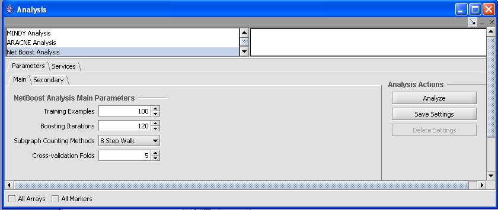
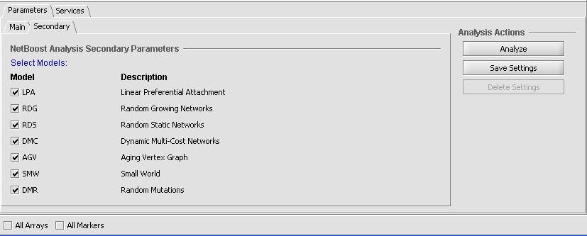

The NetBoost is a network characterization algorithm. The details of the algorithm are described in http://arxiv.org/abs/q-bio.QM/0408010. This help topic describes running NetBoost and viewing the results.

1. Select an expression file in the project folders area of geWorkbench.
2. In the Analysis tools section (lower left pane), select NetBoost Analysis.
3. Populate the parameters used for this analysis method.
3. Select the location to run the analysis (local or Grid) in the service subtab.
4. Click on Analyze. If successful, the project window is updated to reflect the result node (a child node of the input dataset). The Dataset history tab captures the analysis parameters used.
Main tab parameters are as follows:
· Training Examples: The number of training examples to generate for each candidate model.
· Boosting Iterations: The number of boosting iterations in each training round.
· Subgraph Counting Method: Specifies how the feature space is defined, namely using subgraphs that can be constructed by any 8-step walk or using subgraphs that contain 7 edges.
· Cross-validation Folds: The number of cross validation folds to use.
Secondary tab:
This tab lists generative models to evaluate. Specify which models to run NetBoost against using the checkboxes.

This visualization includes a Boosting Iteration Graph, Confusion Matrix and Score Table.
· Boosting Iteration Graph: This summarizes the Training Example by Boosting Iteration. The graph indicates the test loss in red, train loss in green, bound in blue and bias in black.
· Score Table: Displays the average classification score (+/- variance) of the target network T against all the generative models.
· Confusion Matrix: The bottom right of the GUI is a summary (across all cross validation folds) of the performance of the predicted classifier against the held out test networks.
Navigating NetBoost Results
· Load: Load a graph data set Edge List (.txt) or Adjacency Matrix(.adj) directly in the project folders area of geWorkbench.
· Image: Click Image Snapshot button to capture the graphs displayed as an image node.
· Export: Click the Export button or, right click on the result node and select Export or, from the file menu select File>Export. The export file contains the Score Table and Confusion Matrix in a CSV File Format. Each of the fields in the table is separated with commas.